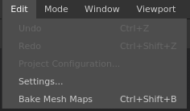

| Action | Description |
|---|---|
| Undo | Go one step back in the History stack. |
| Redo | Go one step forward in the History stack. |
| Project configuration | Open the project settings window of the current project. |
| Settings | Open the general application settings window. |
| Bake Mesh maps | Open the Baking window. |